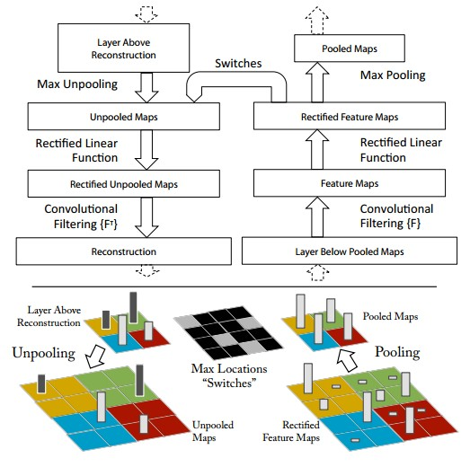
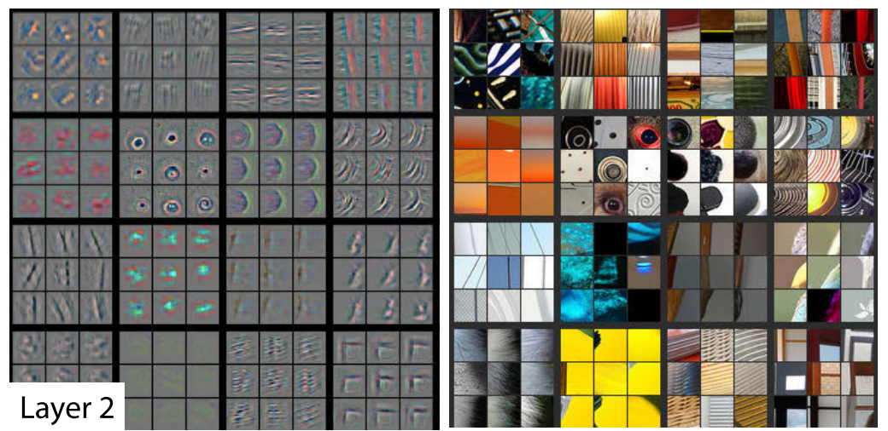
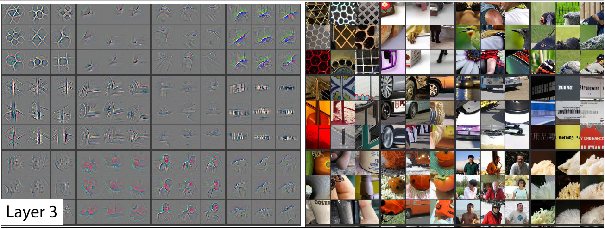
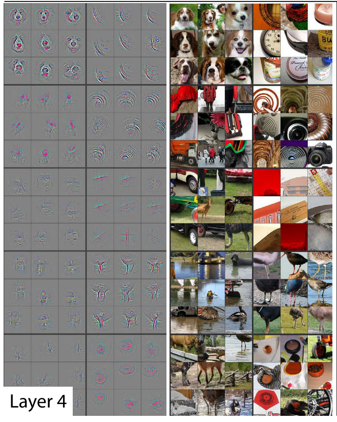
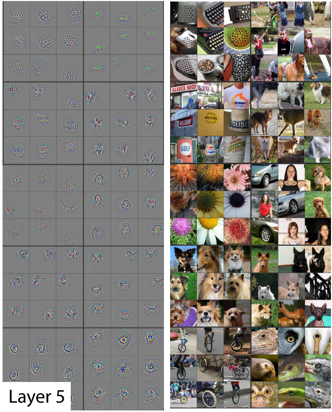

The first paper I chose to write about is one of the most famous papers in the Deep Learning community titled, Visualizing and understanding convolutional networks by M. Zeiler, R. Fergus. Appeared in 2013 this paper remains popular as it introduced some of the most fundamental ideas to aid our understanding of convolutional neural networks and transfer learning. Convolutional neural networks have performed exceedingly well over time on image related tasks. The main objective of this paper is enquire about :-
- Why convolutional networks perform so well on image classification tasks?
- How the convolutional model architectures can be improved?
The most important ideas introduced in this paper are the following:
- Deconvnets and Convnet Visualization
- Convnet Explainability
- Transfer Learning
Before looking into these ideas in a little detail, let’s first discuss the convnet model architecture studied and used in this paper. The standard operation of a convnet is to map colored two dimensional images to a probability vector over different classes i.e. it takes an image as input and returns a vector of probabilities(adding to 1) of the image belonging to each of the classes. Each layer of the convenet consists of:
- convolution of the previous layer output (for the first layer it’s the input image) with a set of filters (parameters)
- rectified linear units relu, which is essentially replacing all negative activations with 0
- max pooling
- normalizing the activations by local response normalization
The top few layers of the convnet are the fully-connected layers follwed by a softmax classifier at the end.
Now let’s look at the important ideas discussed in this paper:
Visualizing convolutional networks with Deconvnet
The process of visualizing a convnet involves identifying the cause of each activation by mapping the activations back to input pixel space with the aid of a Deconvolutional Network (deconvnet). A deconvnet can be thought of as a convnet but in reverse. It is attached to each of the convnet layers in order to probe the activations. In order to examine a given activation, all other activations in the conenet layer are set to zero and the feature maps are passed to the attached deconvnet layer. Then following operations are performed repeatedly until input pixel space is reconstructed:
- Unpooling : Since max pooling operation is non-invertible, an approximate inverse is obtained by restoring the activations at the locations of maximum activation selection.
- Rectification : The reconstructed signals are passed through a relu non-linearity.
- Filtering : In the deconvnet each convnet filter is transposed (flipped vertically and horizontally) and applied to the rectified activations. 
Convnet Visualization
The aforementioned approach is used to visualize the top 9 strongest activations for a given feature map. These activations are projected to pixel space and shown alongside corresponding image patches. Let’s see each layer one by one:
Layer 2:
Layer 2 corresponds to corners and other edge/color conjuctions. 
Layer 3:
Layer 3 captures complex patterns such as mesh patterns, texts etc. 
Layer 4:
Layer 4 shows further variations and is able to classify objects in the picture such as dog faces, bird legs etc. 
Layer 5:
Layer 5 shows complete objects such as keyboards, dogs etc. 
Key Insights
- The lower layers of the model converge within few epochs and upper layers fully converge only after a considerable number of epochs. This suggests it might be beneficial to train different layers at different learning rates.
- By systematically occluding different portions of the image with a grey square and monitoring the output of the classifier, it was observed that the model was able to localize the objects in the scene (explainabilty).
- Overall depth of the model is important for obtaining good performance. Changing the size of the fully connected layers makes little difference to perfor- mance. However, increasing the size of the middle convolution layers give a useful gain in performance. But in- creasing these, while also enlarging the fully connected layers results in overfitting.
- Keeping intial layers trained on ImageNet fixed and training a new softmax classifier of appropriate size using training images from Caltech-256, Caltech-101, PASCAL VOC 2012 datasets resulted in faster training and better results. (Transfer Learning)
All images belong to M. Zeiler and R. Fergus. Zeiler’s image taken from matthewzeiler.com.